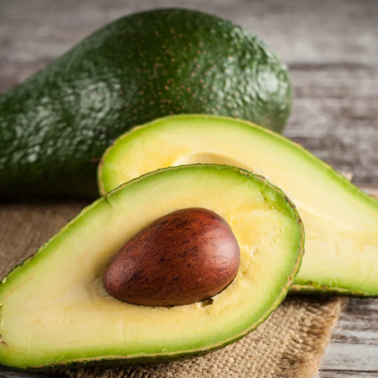
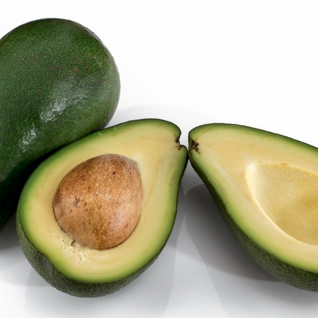
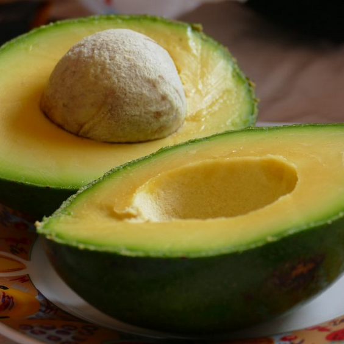
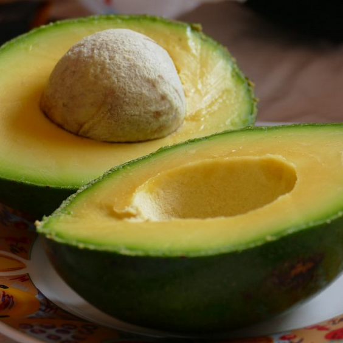
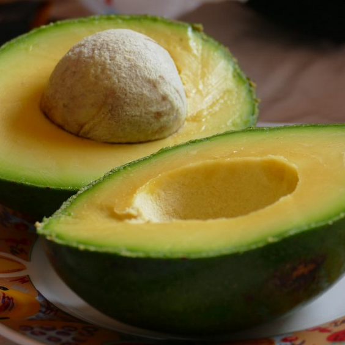

Alpukat adalah buah yang memiliki bentuk lonjong dengan kulit berwarna
hijau tua hingga kehitaman dan daging buah berwarna hijau kekuningan yang
lembut serta berlemak. Buah ini berasal dari Amerika Tengah dan kini
banyak dibudidayakan di berbagai negara tropis, termasuk Indonesia.
Alpukat kaya akan lemak tak jenuh tunggal, vitamin E, K, C, serta serat
yang baik untuk kesehatan tubuh. Rasanya yang gurih dan teksturnya yang
lembut membuat alpukat sering dikonsumsi langsung, dijadikan jus, maupun
campuran berbagai hidangan.
Alpukat dikenal sebagai salah satu buah yang memiliki kandungan gizi
tinggi dan manfaat besar bagi kesehatan. Kandungan lemak sehat di
dalamnya, terutama lemak tak jenuh tunggal, dapat membantu menurunkan
kadar kolesterol jahat dan menjaga kesehatan jantung. Selain itu, alpukat
juga mengandung berbagai vitamin seperti vitamin E, C, K, dan B kompleks,
serta mineral penting seperti kalium dan magnesium yang berperan dalam
menjaga fungsi tubuh agar tetap optimal.
Tanaman alpukat tumbuh subur di daerah beriklim tropis dan subtropis
dengan tanah yang gembur dan drainase baik. Pohonnya dapat tumbuh hingga
mencapai ketinggian 20 meter, dengan daun hijau lebat dan bunga berwarna
kekuningan. Buah alpukat biasanya dipanen ketika masih keras dan dibiarkan
matang secara alami setelah dipetik. Jenis alpukat yang populer di
Indonesia antara lain alpukat mentega, alpukat wina, dan alpukat aligator,
masing-masing memiliki ukuran dan cita rasa yang berbeda.
Selain dikonsumsi langsung, alpukat juga banyak dimanfaatkan dalam
berbagai olahan makanan dan minuman. Buah ini sering dijadikan bahan dasar
jus, salad, roti lapis, bahkan produk kecantikan seperti masker wajah
karena kandungan minyak alaminya yang menutrisi kulit. Dengan rasanya yang
lembut, gurih, dan kaya manfaat, alpukat menjadi salah satu buah favorit
yang tidak hanya lezat tetapi juga menyehatkan.

Alpukat adalah buah yang memiliki bentuk lonjong dengan kulit berwarna
hijau tua hingga kehitaman dan daging buah berwarna hijau kekuningan yang
lembut serta berlemak. Buah ini berasal dari Amerika Tengah dan kini
banyak dibudidayakan di berbagai negara tropis, termasuk Indonesia.
Alpukat kaya akan lemak tak jenuh tunggal, vitamin E, K, C, serta serat
yang baik untuk kesehatan tubuh. Rasanya yang gurih dan teksturnya yang
lembut membuat alpukat sering dikonsumsi langsung, dijadikan jus, maupun
campuran berbagai hidangan.
Alpukat dikenal sebagai salah satu buah yang memiliki kandungan gizi
tinggi dan manfaat besar bagi kesehatan. Kandungan lemak sehat di
dalamnya, terutama lemak tak jenuh tunggal, dapat membantu menurunkan
kadar kolesterol jahat dan menjaga kesehatan jantung. Selain itu, alpukat
juga mengandung berbagai vitamin seperti vitamin E, C, K, dan B kompleks,
serta mineral penting seperti kalium dan magnesium yang berperan dalam
menjaga fungsi tubuh agar tetap optimal.
Tanaman alpukat tumbuh subur di daerah beriklim tropis dan subtropis
dengan tanah yang gembur dan drainase baik. Pohonnya dapat tumbuh hingga
mencapai ketinggian 20 meter, dengan daun hijau lebat dan bunga berwarna
kekuningan. Buah alpukat biasanya dipanen ketika masih keras dan dibiarkan
matang secara alami setelah dipetik. Jenis alpukat yang populer di
Indonesia antara lain alpukat mentega, alpukat wina, dan alpukat aligator,
masing-masing memiliki ukuran dan cita rasa yang berbeda.
Selain dikonsumsi langsung, alpukat juga banyak dimanfaatkan dalam
berbagai olahan makanan dan minuman. Buah ini sering dijadikan bahan dasar
jus, salad, roti lapis, bahkan produk kecantikan seperti masker wajah
karena kandungan minyak alaminya yang menutrisi kulit. Dengan rasanya yang
lembut, gurih, dan kaya manfaat, alpukat menjadi salah satu buah favorit
yang tidak hanya lezat tetapi juga menyehatkan.


Anda Ingin Buah Alpukat?,
Penawaran Khusus Bagi Anda
Harga 1 Kg
Rp. 35.000 Nah Sekarang
Rp. 25.000 Saja
Gimana? Tertarik kan?
PEMBAYARAN DI TEMPAT / COD
hanya untuk jakarta, bekasi dan depok
POTONGAN ONGKIR Rp.5.000,- UNTUK PEMBELIAN VIA TRANSFER
Berikut Khasiat Buah Alpukat
1. Vitamin E
Memiliki anti aging yang bisa mendorong perawatan kulit
alami
2. Vitamin K
Membantu mencegah terjadinya osteoporosis
3. Vitamin B5
Membantu menurunkan tingkat stres, meringankan rasa sakit
4. Vitamin B6
Membantu treat diabetes, pendarahan menstruasi, insomnia
 
